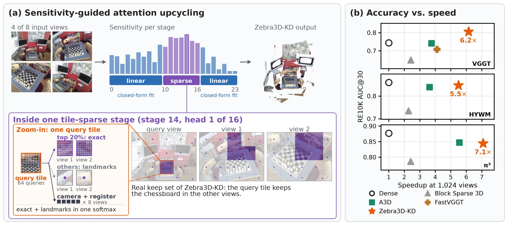

静态网页 · 2026-10-14
可靠状态估计与空间智能每日论文阅读
沿“底层几何 → 3D/4D 表征 → 空间推理 → 具身决策”查看当天候选；按层级、评分、截图和中文摘要筛选，需要原文时可切换 English。
候选论文：1推荐论文：1新论文：1仓库：21新仓库：7
今日概览
- 结论先行：今天唯一的新论文
Zebra3D 值得读的不是“又一个 3D 基础模型”，而是它给出一条可迁移的诊断流程——让预训练模型自己指出哪些层可以被廉价算子替换、哪些层必须保留完整 softmax。它用两个独立诊断量（单阶段替换的输出偏差 + oracle 保留 top-20% key/value 块时的注意力集中度）得到跨三套骨干一致的深度规律：敏感层注意力更集中，两端层注意力接近均匀，于是“集中的地方用稀疏、均匀的地方用线性”。这套「先测量敏感性、再做算子分配、最后闭式对齐」的顺序，和你在融合里判断“哪个环节可以先验简化、哪个环节必须保留完整残差”是同一类问题。
- 论文侧数字：
papers_total=1、papers_new=1、papers_seen_filtered=6、papers_fetched_total=7；推荐 1 篇。
- 重复过滤说明：
papers_seen_filtered=6，即今日抓到的 7 条里 6 条是历史重复，已按“只推荐 is_new=true”的规则全部过滤；唯一 is_new=true 的论文是 arxiv:2610.12727。今日没有把旧论文当“跟踪/更新”补进重点论文。
- 层级复核说明：采集器只对 1 篇自动判级（
Zebra3D = S，geometry-foundation-models，score 19）。人工复核维持 S 级并明确其定位：它不是新的 3D 表示或新的几何解码器，而是对已发布前馈 3D 基础模型做注意力算子层级的效率改造，因此同时落在「几何基础模型」与「实时/GPU 系统」两侧；复核理由已写入 data/2026-10-14/candidates.json 的 tier_review_note，采集缺口写入 collection_gap_note。
- 流程约束：未创建、修改或递归调度任何 cron job；未改动既有采集脚本，只新增当日取源/复核/生成/校验脚本。

新论文 · 日期 2026-10-09 · score 19 · S层 · Geometry Foundation Models / 3D Foundation Models · cs.CV, cs.LG
内容级别：完整单篇海报
作者：Utkarsh Saxena, Ruijing Yang, Mehdi Rezagholizadeh, Akash Haridas
评分 19/10
3D 基础模型前馈重建稀疏注意力线性注意力闭式仿射拟合知识蒸馏长序列重建GPU 内核
一句话工作总结：先用“单阶段替换的输出偏差 + oracle top-20% key/value 块的注意力集中度”给每套骨干的每个全局注意力阶段排序，再把最不敏感的阶段换成带闭式岭回归仿射校正的线性注意力、把敏感阶段保留为 8×8 tile 稀疏注意力（未选中 tile 用均值 key/value + log n_b 占用偏移的 landmark 参与同一个 softmax）。免训练转换在…
前馈式 3D 基础模型能从无位姿图像重建场景，但全局注意力的二次代价限制了它们在大规模视角集合上的可扩展性。本文提出 Zebra3D，一种逐层稀疏-线性混合注意力框架，无需从头训练即可提升预训练 3D 基础模型的效率。作者在 VGGT、HunyuanWorld-Mirror 与 π³ 上观察到一条跨骨干一致的深度规律：早期阶段对线性替换相对宽容，而敏感的中后段阶段注意力更集中。Zebra3D 利用这一结构，把以线性…
Feed-forward 3D foundation models reconstruct scenes from unposed images, but the quadratic cost of global attention limits their scalability to large view sets. We present Zebra3D, a layerwise sparse-linear h…
精选仓库/项目
默认显示 8 个精选；S/A 领域、新仓库和高分仓库优先，可展开查看完整候选。
aigc3d/Glob3R[Nips2026] Official Repo of "Glob3R: Global Structure-from-Motion with 3D Foundation Models"
新项目 · Python · ★ 256 · 更新 2026-10-13 · score 12 · S层 · Geometry Foundation Models / 3D Foundation Models
YongzheLyu/UniFusionOfficial implementation of UniFusion: Sparse-View 4D Reconstruction via Unified Spatio-temporal Depth Alignment (ECCV 2026).
新项目 · Python · ★ 6 · 更新 2026-10-13 · score 8 · S层 · 3D/4D Spatial Perception
Topics：4d-reconstruction, eccv2026
fengrungu-cyber/dynamic-gbi-rrtAdaptive mobile robot navigation in dynamic environments using LRBPF-SLAM, online map updating, uncertainty-aware obstacle prediction, and Dynamic GBI-RRT path planning. Features include adaptive Motion Confidence Index (MCI), risk-aware c…
新项目 · ★ 0 · 更新 2026-10-13 · score 6 · A层 · Robust State Estimation / Uncertainty
johnaggrey/Ananse_GNSS_QCA tool that perform QC checks on GNSS data and checks various data readiness. Quality indicators involve duration, missing observables, signal availability, cycle slips, gaps, multipath/QC warnings, etc
新项目 · Python · ★ 2 · 更新 2026-10-13 · score 6 · C层 · 纯 GNSS/INS / PPP-AR
MaksymKutyshenko/esp32-gps-trackerESP32-S3 GPS tracker on ESP-IDF/FreeRTOS: GNSS, MicroSD track log, GPRS uplink, deep sleep; plus its own live-map web app (Fastify, Postgres, React, Leaflet).
新项目 · C++ · ★ 0 · 更新 2026-10-13 · score 5 · C层 · 纯 GNSS/INS / PPP-AR
Topics：embedded, esp-idf, esp32-s3, fastify, freertos
新项目 · Python · ★ 0 · 更新 2026-10-13 · score 4
新项目 · ★ 0 · 更新 2026-10-13 · score 4
Python · ★ 0 · 更新 2026-10-13 · score 11 · S层 · 3D/4D Spatial Perception
还有 13 个候选仓库
Dwawayu/scr4tchProject page for Scr4tch: Self-Supervised 4D Reconstruction from Raw Video Alone
HTML · ★ 2 · 更新 2026-10-13 · score 8 · S层 · 3D/4D Spatial Perception
Cornell-VAILab/ArchWorld[NeurIPS'26] Official Source Code for "Towards Reconstructing Geographically Diverse Architecture with 3D Foundation Models"
Python · ★ 0 · 更新 2026-10-13 · score 8 · S层 · Geometry Foundation Models / 3D Foundation Models
Python · ★ 14 · 更新 2026-10-13 · score 6 · A层 · Robotic Foundation Models / VLA
Topics：3d-generation, 3d-reconstruction, 3d-vision, awesome-list, computer-vision
Python · ★ 2 · 更新 2026-10-13 · score 5 · A层 · Embodied Navigation / VLN / Spatial Reasoning
HTML · ★ 0 · 更新 2026-10-13 · score 5 · A层 · Embodied Navigation / VLN / Spatial Reasoning
HTML · ★ 0 · 更新 2026-10-12 · score 5 · A层 · Embodied Navigation / VLN / Spatial Reasoning
HTML · ★ 0 · 更新 2026-10-12 · score 5 · A层 · Embodied Navigation / VLN / Spatial Reasoning
CSS · ★ 0 · 更新 2026-10-11 · score 5 · A层 · Embodied Navigation / VLN / Spatial Reasoning
Python · ★ 858 · 更新 2026-10-13 · score 15 · B-层 · Traditional LiDAR/Visual SLAM
Topics：autoware-compatible, benchmarking, gnss, lidar, lidar-slam
stavrosefth/ros2-space-roverSolar-rechargeable 4WD rover on a Raspberry Pi 5 with ROS 2 Jazzy: monocular neural depth (MiDaS), RTAB-Map visual SLAM, Nav2 path planning and an always-on safety layer. No lidar, no stereo camera.
Python · ★ 0 · 更新 2026-10-12 · score 2 · B-层 · Traditional LiDAR/Visual SLAM
Topics：mecanum-wheels, midas, monocular-depth-estimation, nav2, raspberry-pi-5
HTML · ★ 0 · 更新 2026-10-13 · score 4 · C层 · 纯 GNSS/INS / PPP-AR
aardvark-platform/aardvark.baseAardvark.Base is the foundation of the open-source Aardvark Platform for visual computing, real-time graphics, and visualization.
C# · ★ 164 · 更新 2026-10-13 · score 3
Topics：aardvark, aardvark-platform, attribute-grammars, datastructures, fsharp
dhairya-shah7/EchoLocateActive Ultrasonic Echolocation, 2D SLAM Room Mapping & ONNX Neural Navigation for Visually Impaired Users
TypeScript · ★ 0 · 更新 2026-10-13 · score 2